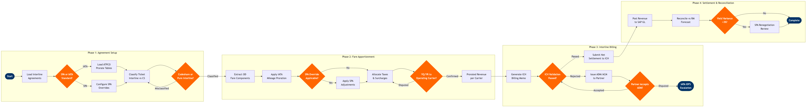

| Step | L4 Step Name | KPI / Target | Pain Point / Risk | Gate |
|---|---|---|---|---|
| 1.1 | Load interline & SPA agreement terms into RA system | Agreement setup lead time ≤5 business days from signature | No standard digital handoff format for SPA terms — analysts manually transcribe flat-rate splits and minimum guarantees into ARA, introducing keying errors that cause systematic mis-proration | ⚠ |
| 1.2 | Ingest ATPCO prorate factor tables (PF Tables) | Prorate table update cycle ≤24 hours after ATPCO publication date | ATPCO publishes 26 fare filing cycles per year; delayed ingestion causes mis-proration on interline tickets issued in the gap window — revenue impact typically discovered only at quarterly ICH reconciliation | |
| 1.3 | Classify ticket as interline, codeshare, or hybrid | Auto-classification rate ≥95% of interline tickets without manual intervention | Codeshare tickets with separate operating vs marketing carrier codes require different proration logic than pure interline; misclassification routes codeshare revenue through ICH instead of bilateral settlement, triggering partner disputes | ⚠ |
| 2.1 | Extract OD fare components and fare basis codes | Fare extraction error rate <0.5% of processed interline tickets | Mixed class of service within a single ticket (e.g., J class on carrier A, Y class on carrier B) complicates fare basis assignment under IATA Resolution 762 — ARA auto-extraction fails on ~8% of mixed-cabin interline itineraries requiring manual override | |
| 2.2 | Apply IATA mileage proration to derive carrier percentages | Mileage calculation accuracy ≥99.5% against IATA TACT reference data | Mileage discrepancies between IATA TACT mileage tables and GDS-routed itineraries (reroutes, diversions) cause variance — airlines typically absorb or dispute the difference at quarterly ICH reconciliation rather than fixing source data | ⚠ |
| 2.3 | Apply Special Prorate Agreement overrides where eligible | SPA override application rate = 100% for all tickets on SPA-covered routes during SPA validity period | Airlines maintain 50–200+ active SPAs; no automated expiry alerting in ARA means analysts continue applying lapsed SPA terms, generating overpayments recovered only at annual SPA audit — average recovery lag is 14 months | |
| 2.4 | Allocate taxes and YQ/YR surcharges per carrier rules | Tax allocation error rate <0.1% of total ticket value across processed interline tickets | YQ/YR fuel surcharge allocation rules vary by bilateral agreement and route — IATA Resolution 728 defaults are frequently overridden in SPAs, and smaller partner carriers often apply inconsistent rules, causing disputed tax remittance averaging $12–18 per ticket | ⚠ |
| 3.1 | Generate interline billing memo for ICH submission | Billing memo submission within T+30 days of travel date per IATA Resolution 743; late filing penalty avoidance rate ≥98% | Late coupon status reporting from GDS partners (Sabre, Amadeus, Travelport) delays billing cycle — coupon voids and exchanges can arrive up to T+21 days, risking T+30 ICH deadline and triggering IATA Resolution 743 late-filing penalties | |
| 3.2 | Validate billing memo against ET coupon at ICH | First-pass ICH billing acceptance rate ≥92% of submitted memos | Coupon status discrepancies (voided tickets, involuntary reroutes, ADMs already issued) between issuing and validating carrier cause ICH rejections — manual investigation averages 3 hours per rejected memo and ~2.4% of memos are rejected on first pass | ⚠ |
| 3.3 | Issue ADM or ACM to resolve billing discrepancy | ADM/ACM resolution within 45 days per IATA Resolution 850m; suspense account balance <0.5% of monthly interline revenue | Partner carriers frequently contest ADMs citing different prorate factor versions — IATA Interline Dispute and Facilitation System (IDFS) resolution process can extend to 180 days, locking revenue in suspense accounts and distorting monthly revenue reporting | ⚠ |
| 4.1 | Submit net interline settlement to IATA Clearing House | ICH settlement submission on-time rate = 100% (ICH settlement runs on fixed monthly calendar with no grace period) | Errors in net calculation caused by parallel billing cycles for the same partner (current month billing + prior month ADM adjustments) generate short settlements — ICH charges 1% per month penalty on underpayment and requires supplemental submission | |
| 4.2 | Post interline settlement to SAP General Ledger | GL posting within T+5 business days of ICH settlement confirmation; period-close accuracy = 100% | Revenue recognition timing gaps between ARA settlement date and SAP posting cause interline revenue to be recognised in the wrong accounting period — reversals required on average for 3–5% of monthly interline revenue, distorting P&L and requiring CFO sign-off | |
| 4.3 | Reconcile prorated actuals against RM interline forecast | Interline yield variance ≤±3% of RM forecast; routes exceeding threshold reviewed within 10 business days | RM systems optimise for own-metal revenue and treat interline flows as residual — interline revenue attribution to O&D pairs is imprecise, causing systematic undervaluation of interline-dependent routes and suboptimal capacity allocation decisions | ⚠ |
| 4.4 | Audit SPA performance and flag renegotiation triggers | SPA guarantee achievement rate ≥90% of active agreements; annual SPA review completion by Q1 for all agreements expiring in the calendar year | No automated alerting when SPA minimum guarantees are trending below threshold — airlines detect shortfalls only at annual review, by which time the commercial window to renegotiate favourable terms has passed and the partner has already shifted volume to competing carriers | ⚠ |